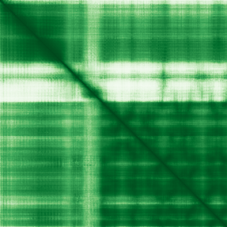
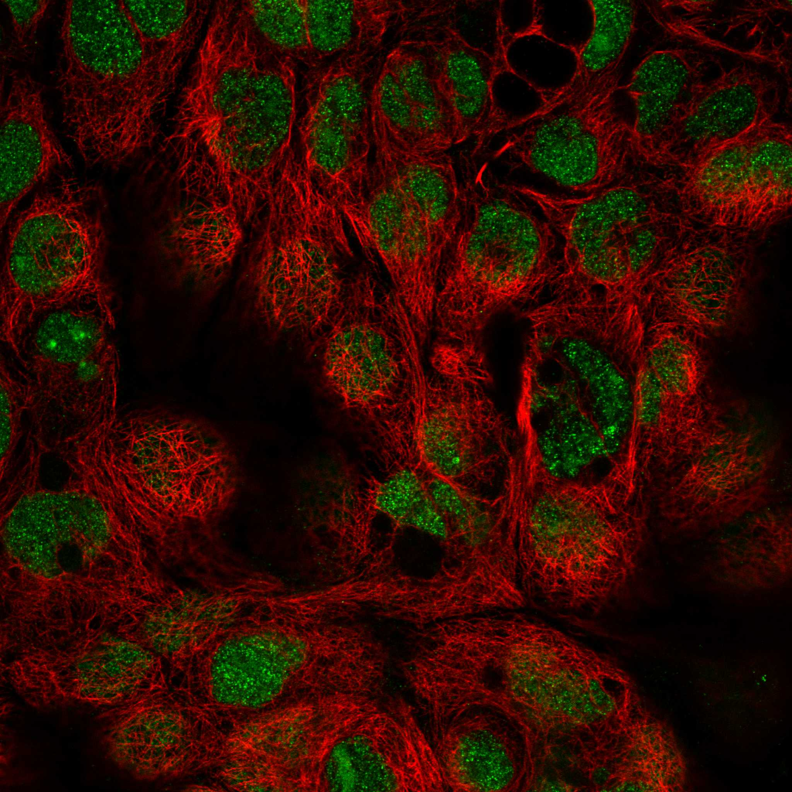

type: protein-evaluation gene: "NSA2" date: 2026-06-01 tags: [protein-scout, nucleolus, evaluation] status: scored ---
NSA2 核蛋白评估报告
1. 基本信息
| 项目 | 内容 |
|---|---|
| 基因名 / 别名 | NSA2 / TINP1 |
| 蛋白全名 | Ribosome biogenesis protein NSA2 homolog |
| 蛋白大小 | 260 aa / 30.1 kDa |
| UniProt ID | O95478 |
2. 评分总览
| 维度 | 得分 | 新权重 | 加权后 | 关键证据摘要 |
|---|---|---|---|---|
| 核定位特异性 | 8/10 | ×4 | 32.0 | UniProt Nucleus, nucleolus (ECO:0000269)；GO-CC nucleolus IEA, preribosome large subunit precursor IBA；HPA Enhanced, Nucleoplasm+Nucleoli |
| 蛋白大小 | 8/10 | ×1 | 8.0 | 260 aa, 30.1 kDa，小型核仁蛋白 |
| 研究新颖性 | 10/10 | ×5 | 50.0 | PubMed strict=14, broad=26 |
| 三维结构 | 8/10 | ×3 | 24.0 | AlphaFold pLDDT 87.7 (pct>90: 71.2%)；PDB 28 个结构 (EM, pre-60S ribosomal subunit) |

| 调控结构域 | 4/10 | ×2 | 8.0 | Ribosomal protein S8e domain (PF01201)；核糖体生物合成/60S 亚基组装因子 |
| PPI 网络 | 6/10 | ×3 | 18.0 | STRING: RPF2 (0.999 exp 0.988), GTPBP4 (0.999 exp 0.991), RSL24D1 (0.999 exp 0.969)；IntAct 大量酵母 TAP；UniProt 无记录 |
| 加权总分 | 140/180** | |||
| 互证加分 | +0.0 | |||
| 归一化总分 (÷1.83) | 76.5/100** |
3. 详细分析
3.1 核定位证据
| 来源 | 定位 | 可信度 |
|---|---|---|
| UniProt | Nucleus, nucleolus (ECO:0000269) | 高 (实验证据) |
| GO-CC | nucleolus (IEA:UniProtKB-SubCell), preribosome, large subunit precursor (IBA:GO_Central) | 中 |
| Protein Atlas (IF) | HPA Enhanced, Nucleoplasm + Nucleoli (co-main) | 高 (最高可信度) |
HPA IF 状态: HPA IF 图像已本地嵌入。

结论: NSA2 具有高置信度的核仁/核质定位。UniProt 实验注释支持 nucleolus，HPA Enhanced 确认 Nucleoplasm+Nucleoli。作为 60S 核糖体亚基组装因子，核仁定位在功能上完全自洽。
3.2 结构与数据源
| 指标 | 数值 |
|---|---|
| AlphaFold | AF-O95478-F1 |
| 平均 pLDDT | 87.7 |
| pLDDT >90 | 71.2% |
| pLDDT 70-90 | 12.3% |
| pLDDT <50 | 1.9% |
| PDB | 28 个 (8FKR-8FL9, 8IDY, 8IE3, 8INE-8IR3, 8RL2, 9QIW)，均为 Cryo-EM，human pre-60S 核糖体亚基组装中间体 |
| InterPro | IPR039411, IPR022309 |
| Pfam | PF01201 (Ribosomal protein S8e) |
AlphaFold PAE 状态: PAE 已下载。pLDDT 良好 (87.7, 71.2% >90)，仅 1.9% <50，结构预测可靠。PDB 拥有大量 pre-60S ribosome Cryo-EM 结构（28 个），均为不同组装状态下的全 60S 颗粒，NSA2 作为组装因子嵌入其中。
3.3 研究现状
| 指标 | 数值 |
|---|---|
| PubMed strict (Title/Abstract) | 14 |
| PubMed broad | 26 |
| 别名 | TINP1（未用于 scoring） |
关键文献：NSA2 是 ribosome biogenesis 因子，参与 60S 核糖体大亚基的质量控制与组装 (PMID:30243719, 19932687)。也被报道与 diabetic nephropathy (PMID:23220173, TGF-beta 通路)、chronic kidney disease (PMID:39396937, GFM2 synteny) 和肿瘤增殖（PMID:36407085, colon adenocarcinoma）相关。文献量极低（strict=14），属于高度新颖靶标。
3.4 PPI 网络（三源综合）
| Partner | Source | Score/Evidence | Relevance |
|---|---|---|---|
| RPF2 | STRING | 0.999 (exp 0.988) | Pre-60S assembly factor |
| GTPBP4 | STRING | 0.999 (exp 0.991) | GTPase, 60S maturation |
| RSL24D1 | STRING | 0.999 (exp 0.969) | 60S ribosomal protein L24-like |
| MRTO4 | STRING | 0.999 (exp 0.987) | 60S ribosome assembly |
| GNL2 | STRING | 0.999 (exp 0.984) | Nucleolar GTPase |
| PES1 | STRING | 0.999 (exp 0.973) | PeBoW complex, 60S processing |
| BOP1/WDR12 | STRING | 0.995/0.997 (exp 0.948/0.938) | PeBoW complex |
| RPL31/RPL30 | STRING | 0.996/0.996 (exp 0.968/0.974) | 60S ribosomal proteins |
PPI 网络集中在核糖体 60S 亚基组装通路，STRING 中有 15+ 个 partners 的综合 score >=0.995 且全部以实验证据为主（exp >0.93），互作置信度极高。IntAct 酵母 TAP-tag 纯化也确认了大量核糖体组装因子互作。UniProt 无记录人源实验互作，但 STRING 的人源实验数据非常充分，弥补了这一缺口。
4. 总体评价
NSA2 是一个文献量极低（strict=14）、结构验证充分（PDB 28 个 pre-60S Cryo-EM + pLDDT 87.7）、蛋白小型（30.1 kDa）的核仁蛋白候选。作为 60S 核糖体亚基组装因子，HPA Enhanced 确认 Nucleoplasm+Nucleoli 定位，PPI 网络极其密集且以高置信度实验互作为主（RPF2, GTPBP4 等 exp >0.98）。主要不足：功能域单一（仅为 ribosomal protein S8e domain），调控结构域得分偏低；UniProt 无实验互作记录需补强。综合评分高。
5. 数据来源
- UniProt: https://www.uniprot.org/uniprotkb/O95478
- AlphaFold: https://alphafold.ebi.ac.uk/entry/O95478
- PubMed: https://pubmed.ncbi.nlm.nih.gov/?term=NSA2
- Protein Atlas: https://www.proteinatlas.org/ENSG00000164346-NSA2
PAE 图像说明: AlphaFold PAE 图像已重新获取并嵌入（见下方 PAE 图像修正块）；结构判断仍结合 pLDDT 与 PAE 综合判断。
<!-- AF_PAE_REPAIR_START --> PAE 图像修正（2026-06-05）: AlphaFold 提供 predicted aligned error 图像；此前“PAE 图像暂无数据”的表述为未获取/未嵌入导致。